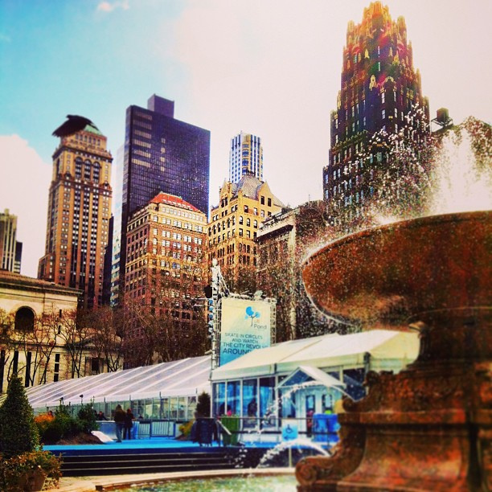
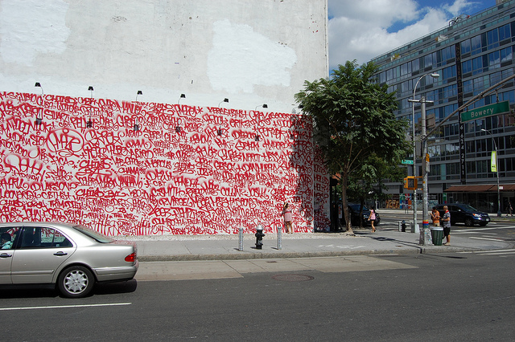

You go and barricade the store to defend as your new home:
The Bryant Park Whole Foods

"Spring is coming!☀"
by Apoorva Jinka.
Licensed under CC 2.0.
The Bowery Whole Foods

"Barry McGee and Josh Lazcano, mural at Houston and Bowery, 2010"
by Andrew Russeth.
Licensed under CC 2.0.
Return to Home Page